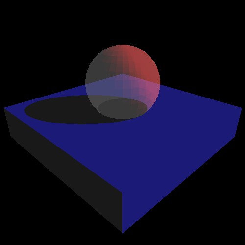
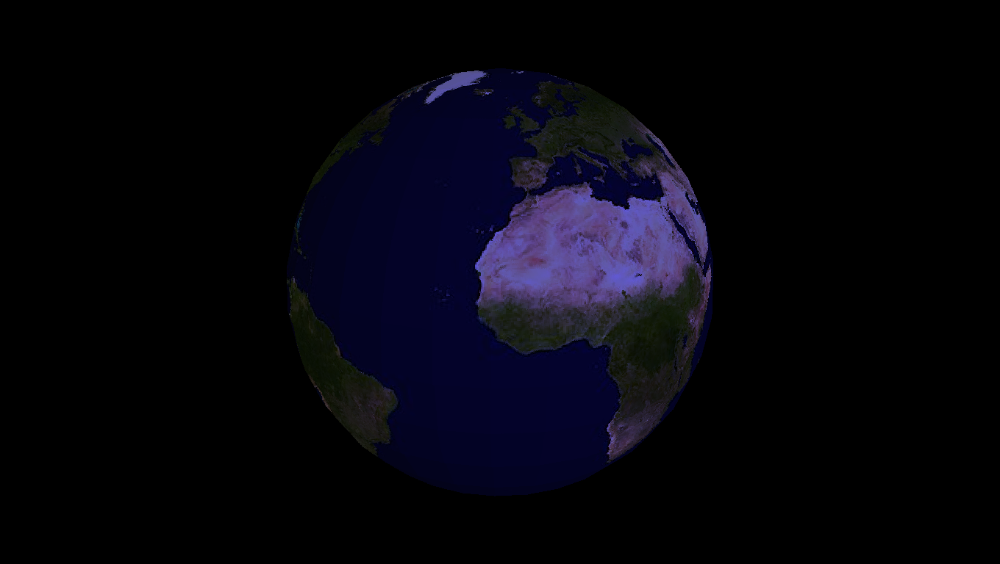
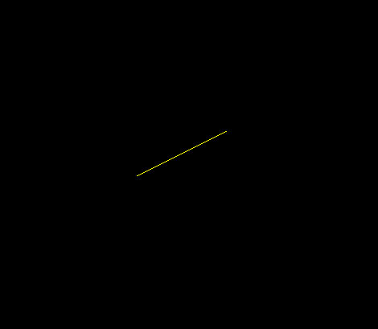
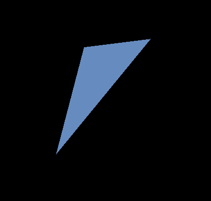
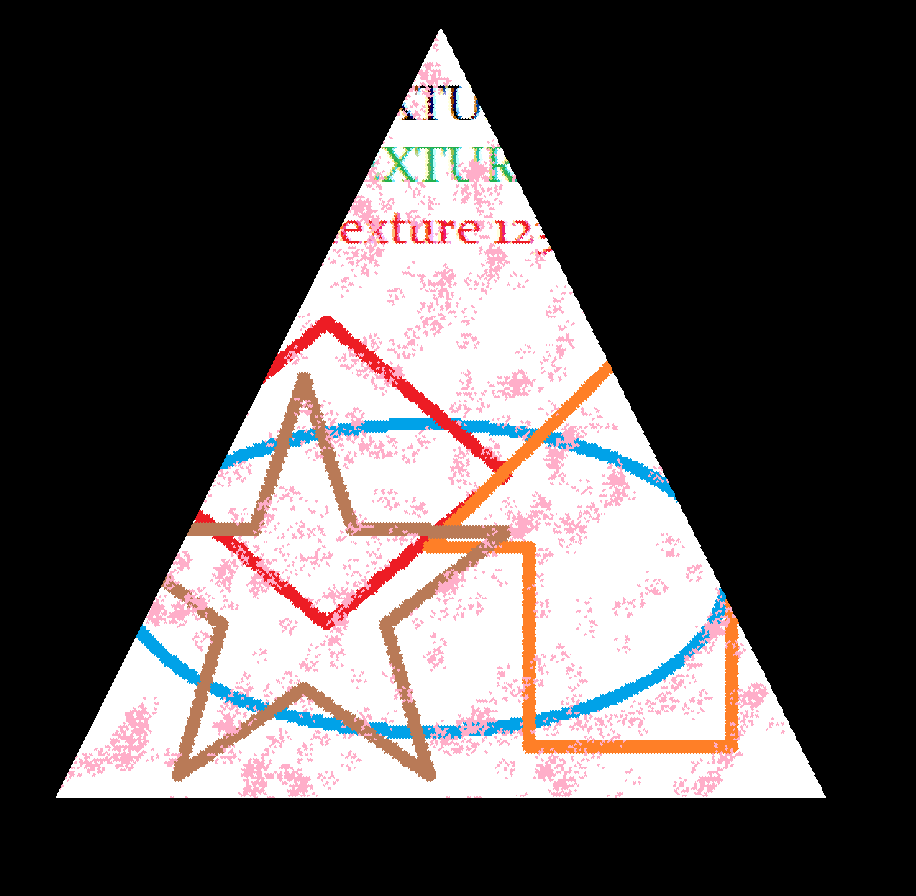
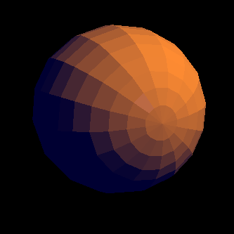
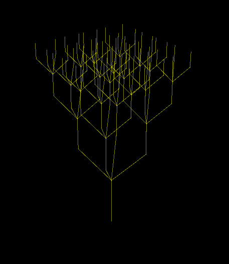
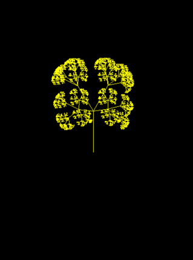
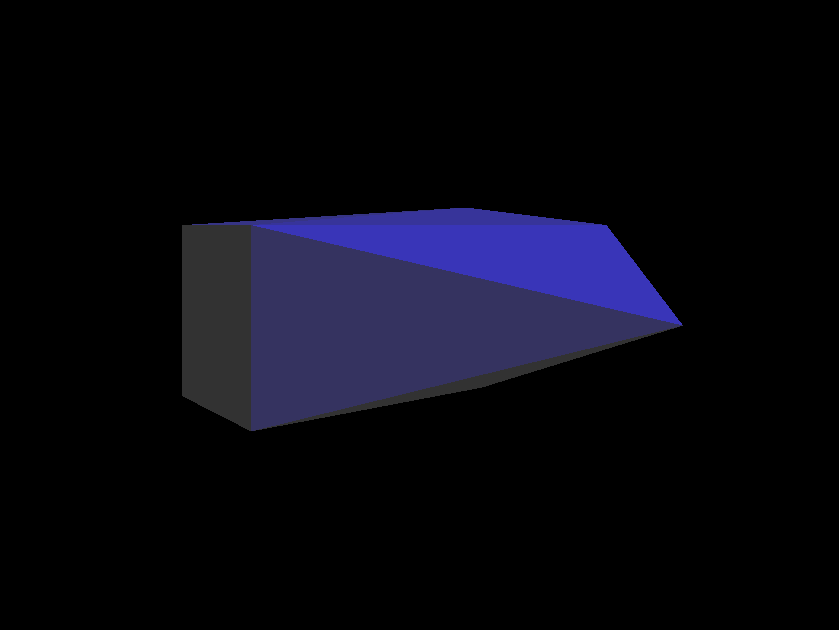

Fast3d
3D imaging and calculations framework for java
Eine Einführung in Fast3d.

Fast3d
3D imaging and calculations framework for java
Made in Saxony, Germany by Tim Trense, Copyright 2016, Alle Rechte vorbehalten, All rights reserved.
Was ist Fast3d und wofür ist es entwickelt
Das Framework ist dafür entwickelt, den Einstieg sehr einfach zu gestalten,
sodass eine nützliche Anwendung innerhalb von wenigen Minuten und mit nur
ein paar Zeilen Code gebaut werden kann.
Das Framework zielt auf drei Einsatzgebiete ab:
- den Einstieg in 3d-Programmierung (für Schüler und Studenten)
- komplexe Anwendungen, die von 3d als Feature profitieren könnten (professionelle Applikationen)
- Creative Coding
Dabei bietet Fast3d eine Vielzahl an nützlichen Features:
- java als EINZIGE dependency - kein OpenGL oder DirectX
- multi-plattform - Android-Version genauso leicht zu programmieren wie Java-Version
- pure java - only CPU - und trotzdem vergleichbar schnell wie andere 3d-grafik-frameworks (OGL, DX)
- designed with simplicity in mind - minimaler Einarbeitungsaufwand - sinnvolle 3d-Funktionen in weniger als 10 Zeilen Code
- Model-View-Controller-Architektur
- komplette Dokumentation
- weniger als 1 MB inklusive ausführlichem javadoc - momentan unter 0.2 MB ohne javadoc (release-version), Android-Version 0.15 MB
- verpackt als .jar-Datei - einfach zum java-build-path hinzufügen und loslegen
- durchgängig objektorientiert
- fast3d.simple-packages mit default-Implementierungen für alles - mit dem mitgelieferten Baukasten ist fast jede Anwendung abgedeckt
- sehr schneller render-prozess - Echtzeit-Anwendungen Full-HD/4K 60+fps möglich
- Phong-Illumination-Model
- swing basiert: Panel3d als zentrale Klasse
- keine Sorge um komplizierte 3d-Berechnungen: übernimmt alles das framework
- an vielen Stellen erweiterbar
- fast3d.util stellt viele Algorithmen bereit, damit der Programmierer sich ganz auf seine eigentliche Aufgabe konzentrieren kann
- Lageberechnungen mittels RelationshipAnalytics - geeignet für mathematisch- exakte Anwendungen
- ray-tracing für hochauflösende und realistische Bilder
- Panel3d p.render(Graphics3d) : AWT-artiges Zeichnen in 3d
- Turtle3d : Turtle-Grafik in 3d mittels TurtlePanel3d
- eingebautes Dateiformat .f3obj - bis zu 90% Speicherplatz-Ersparnis gegenüber Wavefront .obj & .mtl
Genug der Vorrede - let's start coding
Um Fast3d in ein Projekt einzubinden genügt es völlig die entsprechend
aktuelle .jar Datei dem java-build-path hinzuzufügen. Es werden absolut
keine anderen Dependencies oder Referenzen benötigt: kein DirectX oder
OpenGL. Überall wo java 1.7 und aufwärts installiert ist, läuft auch
fast3d.
|
Um eine 3d-Funktionalität einer auf Swing basierenden Applikation
hinzuzufügen, bedarf es einer Swing-Componente: dem Panel3d - oder
einer für den Einstieg vereinfachten Variante (die eigentlich auch meistens
ausreicht) : dem SimplePanel3d
|
|
Nun ist auf der Komponente nur ein schwarzer Hintergrund zu sehen. Logisch, denn
es wurden ja auch noch keine Objekte (sogenannte Renderables) in die Szenerie
geladen. (Man beachte bitte den Unterschied zwischen Szene und Szenerie: als Szenerie
wird die Gesamtheit aller renderbaren Objekte bezeichnet- eine Szene fasst nur einen Teil
dieser zur besseren Datenstruktur zusammen. Beispiel: Ein ObjFileLoader
lädt eine Szene, aber ein Panel3d kann mehr als nur eine .obj file anzeigen)
Es wird Zeit ein renderbares Objekt in die Szenerie zu laden.
Erzeugen wir also beispielsweise eine Linie:
final Vector3d start = new Vector3d(-1,0,0);
final Vector3d end = new Vector3d(1,1,0);
final Color col = ColorGen.YELLOW();
final Line line = new Line(start, end, col);
Nun wird es Zeit, diese Linie in die Szenerie einzufügen.
Jedes Panel3d hält ein sogenanntes Universe, das alle Daten besitzt, die
notwendig sind um eine Szenerie zu rendern.
final Universe uni = p3d.getUniverse();
uni.add(line);
Als letztes muss nun noch das Universe gerendert werden.
Das passiert automatisch jedes Mal, wenn das Panel3d einen
paintComponent() Aufruf bekommt.
Also:
p3d.repaint();
Doch halt: es wird nichts angezeigt?!
Naja, das ist nicht verwunderlich, denn immerhin haben wir nirgends angegeben,
von wo aus wir in das Universe hineinschauen möchten.
Eine Szenerie wird immer von einem Blickpunkt und einer Blickrichtung aus gerendert.
Informationen darüber hält auch das Universe in Form einer Camera.
(Tipp: da eine Kamera entlang ihrer Blickrichtung gedreht werden kann,
muss angegeben werden, wo oben ist (hier ist es die standart-hoch-achse))
final Camera cam = uni.getCam();
final Vector3d position = new Vector3d(0,0,5);
cam.moveTo(position);
final Vector3d upVector = Vector3d.up();
final Vector3d lookDirection = Vector3d.forward();
cam.lookInDirection(lookDirection, upVector);
Nun sollte das Panel3d eine Linie zeigen.
Wir werden im 3d-Raum oft mit Vektoren arbeiten: das ist eine Kombination
aus 3 reellen Zahlen (x, y, z), die entweder eine Richtung im Raum oder
eine Position im Raum angeben.
Das Koordinatensystem ist dabei ein normales, mathematisches, karthesisches
Koordinatensystem, bei dem die x-Achse von links nach rechts geht, die y-Achse nach oben
und die z-Achse aus dem Bildschirm heraus.
Hier nochmal der gesamte Quelltext:
Es gibt noch eine ganze Palette mehr mitgelieferter Renderables in fast3d.renderables
u.a. Triangles und beleuchtete AdvTriangles, Callouts, Rectangles, HUDs, ...
(weitere Informationen im javadoc)
eigene Renderables zu definieren ist möglich,
aber für den Anfang etwas kompliziert - später mehr

Interaction 1
Ein statisches Bild anzuzeigen mag nun manchmal hilfreich sein, aber
ein echtes Gefühl von Tiefe erhält der Nutzer erst, wenn er sich
in dem Universum bewegen kann.
Dafür setzt Fast3d konsequent eine Model-View-Controller Architectur um.
Das Datenmodell bietet das Universe, die Anzeige wird vom Panel3d übernommen,
und Nutzereingaben verarbeitet ein Objekt einer Klasse die von (Simple)Control erbt.
Ein Control kann aber auch autonom (bspw. in Abhängigkeit der Zeit) Veränderungen
im Universe / am Panel3d vornehmen.
Ein Control übernimmt das gesamt AWT-Eventhandling eines Panel3d.
Um es einfacher zu machen gibt es eine Reihe vorgefertigter Controls, u.a.
das SimpleTopDownRotationUserControl.
Dieses sorgt dafür, dass der User per mouse-drag horizontal die Camera um
einen angegeben Punkt rotieren kann (standartgemäß der Koodinatenursprung).
Im Paket fast3d.simple.controls finden sich noch weitere interessante fertige
Controls (u.a. das gleiche Control nur ohne User-Input aber mit
automatischer Rotation).
Um eigene Controls zu definieren einfach von fast3d.control.SimpleControl
oder fast3d.control.Control ableiten. (weitere Informationen im javadoc)
Ein Control kann für jedes Panel3d registriert werden.
Jedes SimplePanel3d verfügt zudem über ein FrameRate-Objekt, welches in
einem Thread dafür sorgt, dass es kontinuierlich neu gezeichnet wird.
Dies muss eingestellt werden, da die Änderungen am Model nicht sofort
zu einem neuen Frame der View führen. (weitere Informationen im javadoc)
Dreiecke und Licht
Ein paar tolle Linien im Raum zeichnen mag zwar interessant sein, aber
was wäre, wenn man 3d-Objekte wie ein Auto anzeigen könnte?
Nun, solche Objekte bestehen aus Dreiecken, die die Form annähern.
Um also ein Auto zu bauen, muss man mehrere Dreiecke definieren, die im Raum
aneinander liegen.
Normale Triangles kann man wie Lines nur mit drei Vektoren definieren und dem
Universe hinzuzufügen.
Aber damit das Auto eine erkennbare Form bekommt braucht es Licht und Schatten.
Normale Triangles reagieren aber nicht auf Licht - sie behalten immer die zugewiesene
Farbe auf dem Bildschirm.
Um eine Grundfarbe zu erhellen wenn Licht darauf fällt, bedarf es eines Renderables,
das dies berücksichtig, wenn es gebeten wird sich 3d-zu-zeichnen.
Ein solches ist das AdvTriangle.
Der Lichtberechnung liegt das Phong-Illumination-Model zugrunde, das heißt, dass
es verschiedene Arten von Licht gibt, die zusammengerechnet mit dem Material
die Bildschirmfarbe (die sogenannte sichtbare Farbe) ausmachen.
Da nun eine Oberfläche auf unterschiedliche Lichtarten (ambient, gerichtet, Glanzlicht)
unterschiedlich reagieren kann (stark glänzend, aber sonst recht dunkel z.B.)
wird für jede Lichtart eine Oberflächenfarbe definiert, zudem eine Normale und ein Glanzwert.
All diese Farbeigenschaften werden in einem Material-Objekt zusammengefasst, dass
einem beleuchtbaren Objekt im Konstruktor mitgegeben werden kann.
(Eine Beleuchtungsberechnung wird nur durchgeführt, wenn ein renderbares
Objekt Illuminatable implementiert)
(weitere Informationen im javadoc)

Oberflächentextur
In der Designphase des Autos aus vorangegangenem Beispiel wird man früher oder später an den Punkt kommen, an dem man
sehr feine Details modellieren muss - beispielsweise die Felgen oder die Rillen der Reifen.
Dies alles in das 3d-Modell mit einzubringen wäre aber unter Umständen, je nach Anwendungsfall, eine enorme
Verschwendung von Speicher und Rechenzeit beim Rendern.
Um einer Oberfläche eine plastische Beschaffenheit zu geben, oder um ein Bild in einer Szenerie anzuzeigen bedarf es
einer sogenannten Textur. Das ist im Grunde ein speziell aufbereitets Bild (.png, .jpg, .jpeg,...).
Dieses Bild wird dann beim Rendern wie eine dehnbare Folie auf die Oberfläche des 3d-Modells gezogen.
Man benötigt also nur eine Bilddatei, die man als Textur lädt und ein fast3d.renderable.AdvTriangle.

Zu beachten: texturierte AdvTriangles kosten wesentlich mehr Renderzeit als normale Triangles oder AdvTriangles -
man sollte Texturierung also mit Bedacht einsetzen, wenn es um Echtzeitanwendungen geht.
Komplexe Objekte
Sicherlich ist es kompliziert ein Auto aufzubauen, wenn man jedes AdvTriangle selbst
definieren muss. Doch glücklicherweise gibt es 3d-Programme (etwa Blender) die solche
komplexen Strukturen in handliche Dateien exportieren können.
Ein solches 3d-Dateiformat ist *.obj - Das Wavefront Object Format.
Um ein 3d-Objekt zu laden genügt einfach folgendes:
final Scene scn = ObjFileLoader.load("filename.obj");
Das Ergebnis ist entweder eine renderbare Szene (die dem Universe hinzugefügt werden kann),
oder null wenn irgendwas schief lief. (Wenn man Exception-Handling betreiben möchte,
kann man auch den FileInputStream als BufferedReader plus den Verzeichnisnamen der Datei
an ObjFileLoader.load(dirName, reader) übergeben )
(weitere Informationen im javadoc)
Es gibt außer der Scene noch andere renderbare Datenstrukturen:
- Scene - enthält und rendert mehrere Objects (equivalent zu einer .obj-Datei)
- Object - enthält und rendert mehrere Groups (equivalent zu einem .obj-o-tag)
- Group - enthält und rendert mehrere Triangles (equivalent zu einem .obj-g-tag)
Jede solche Datenstruktur kann wie ein Triangle der Universe hinzugefügt werden,
wird als seine Komponenten gerendert und kann transformiert werden (später mehr).
Will man jedoch die Unter-Komponenten selbst anklickbar machen und nicht nur
die gesamte Scene bspw. so sollte man
scn.addObjectsToUniverse(Universe)
aufrufen :
die Scene (in diesem Fall) wird dann nicht mehr zum Universe hinzugefügt,
aber ihre Objects.
Will man jedoch jedes einzelne Triangle anklickbar machen, so ruft man
scn.addToUniverse(Universe) auf.
Diese Methode gibt es auch für Objects. Außerdem besitzen Objects noch
obj.addGroupsToUniverse(Universe).
Anklickbar bedeutet folgenes: man kann auf einem Panel3d mittels pickClosest(x,y) dasjenige
Renderable herausfinden, das an diese Bildschirmkoordinate gerendert wird. Das kann man z.B. in
einem Control nutzen oder auf ein SimplePanel3d einen ClickListener3d registrieren - mehr dazu weiter unten.
Um .obj-Dateien zu exportieren sind folgene Optionen sinnvoll: keep vertex order,
write normals, triangulate faces, write materials,
objects as OBJ Objects and objects as OBJ groups, material groups
Um Aktionen auf jedem einzelnen Vertex einer Group, eines Objects oder einer
Scene auszuführen, gibt es complex.forEveryVertexOnce(VertexAction). Dabei
ist VertexAction ein functional interface mit der Methode perform(Vector3d).
Alle diese Datenstrukturen besitzen:
- moveTo(Vector3d positionCenter)
- moveInDirection(Vector3d dir)
- scale(double factor)
- forEveryVertexOnce(VertexAction) und forEveryVertex(VertexAction)
- capacity()
- clone(), equals(java.lang.Object) und toString()
- getRelativePositions() - return Hashtable of [Triangle/Group/Object, Vector3d relativeToCenter]
- rotX(double rad), rotY(double rad), rotZ(double rad), rot(Vector3d axis, double rad)
- getTriangles() und getTrianglesOnce()
Wenn man jedoch ein Programm (eventuell sogar auf einer mobilen Plattform) ausliefern möchte, sollten die
Ressourcen-Dateien ziemlich klein sein. Das .obj Format ist and dieser Stelle nicht das Bestmögliche,
weil es die Dateien menschenlesbar schreibt. Das macht sie leicht zu verändern, aber sicherlich nicht
klein. Außerdem muss man darauf achten, dass .mtl Dateien für die Materialbibliotheken noch richtig
aufgelöst werden können.
Alle diese Probleme löst ein anderes Format. Fast3d definiert hier ein eigenes: das Fast3d-Object-Format
*.f3obj.
Hiermit wird es möglich die Materialien und Objekt-Daten in einer Datei zusammenzufassen und gleichzeitig
bis zu 90% Speicherplatz zu sparen. Um dieses Format zu nutzen gibt es den F3ObjImporter und F3ObjExporter.
Vordefinierte Geometrische Körper - GeometricBodies

Für komplizierte Formen, wie einen Vogel oder ein Haus mag es sinnvoll sein, diese in einem
3d-Design-Programm (wie etwa blender) zu bauen und dann in eine fast3d-Applikation
zu laden. Aber es gibt eine Reihe mathematischer Körper, die erzeugt und manipuliert werden
können, ohne sie jedes Mal neu in einem solchen Programm bearbeiten zu müssen.
Solche mathematischen Formen werden geometrische Körper genannt. In Fast3d werden besonders
die Polyeder genutzt - also Würfel, Quader, Pyramide, Prisma ... - andere Körper mit runden
Begrenzungen werden durch high-poly-Polyeder angenähert: Zylinder, Kugeln und Kegel etwa.
Alle diese einfachen Körper werden als Groups definiert und über sogenannte fast3d.simple.shapes.GeometricBodyBuilder
gebaut. Es gibt eine Reihe vordefinierter GeometricBodyBuilder:
| fast3d.simple.shapes.XXX GeometricBodyBuilder
| für:
| Eigenschaften
|
| Box
| Würfel, Quader, ColorCubes (Würfel mit zufällig-bunten Seiten - unabhängig von den Eigenschaften; Größe immer 1d)
| sizeX, sizeY, sizeZ
|
| Cone
| Zylinder, Pyramiden (resolution gering r<10)
| resolution, height, radius, onGround
|
| Sphere
| Kugeln, eckige Bälle
| resolutionLatitude, resolutionLongitude, radius
|
| Cylinder
| Zylinder, Prisma
| resolution, height, radius, onGround
|
Jeder GeometricBodyBuilder hat die Methoden setMaterial(Material) und setColor(Color) über die festgelegt
werden kann, mit welchen Eigenschaften die Dreiecke der resultierenden Group ausgestattet werden. (Und ob AdvTriangles
oder normale Triangles genutzt werden (Dies könnte sich in späteren Versionen ändern).
Für jeden Builder muss genau eine der beidem Methoden aufgerufen werden. Danach können via public-field-access
die Eigenschaften weiter bestimmt werden. (Die Felder haben normierte default-Werte)
Wenn der Körper fertig definiert ist wird builder.build():Group aufgerufen und man erhält den Körper,
der sich am Nullpunkt befindet.
Vorgehen zur Erzeugung eines Dreieck-prismas:
Cylinder c = new Cylinder(); //make a new builder
c.setMaterial(someMaterial);
c.resolution = 3; //make it have 3 vertices for top-plate and bottom-plate
c.onGround = true; //make it have its bottom be on the xz-plate
Group shape = c.build();
shape.moveTo( new Vector3d(1,2,3) ); //handle the result like a normal group
universe.add(shape);
Interaction 2
Manchmal möchte man wissen, worauf der User meint zu klicken, wenn er auf
ein Panel3d mit der Maus klickt.
Um auf solche 3d-Klicks zu reagieren gibt es den ClickListener3d.
Einfach einem SimplePanel3d per setClickListener(listener, mode) einen
Instanz von ClickListener3d zuweisen und man bekommt auf jeden Klick (oder Drag)
alle möglicherweise angeklickten Renderables.
(Das möglicherweise angeklichte Renderable wird per ray-tracing ermittelt -
jedes Renderable, das einen Schnittpunkt mit dem Strahl zurückgibt wird in
Betracht gezogen, aber nur dasjenige Renderable, das ganz zuoberst auf
dem Bildschirm liegt ist das möglicherweise angeklickte. (also nur das jeweils sichtbare))
Der ClickMode gibt an, wie eine Mausaktion zu einem 3d-Klick ausgewertet werden soll.
(weitere Informationen im javadoc)
Creative Coding

Wäre es nicht cool, wenn man einfach ein Bild malen könnte - mit Raumtiefe?
Tja, genau das kann man mit Fast3d auch.
Man nehme ein Panel3d / SimplePanel3d und baue ein eigenes MyPanel, das von dieser Klasse erbt.
Panel3d und SimplePanel3d stellen zwei sehr interessante Methoden zur Verfügung:
- preRender()
- render(Graphics3d)
preRender() wird standartgemäß genutzt um Änderungen am Panel3d (selten)
oder an seinem Universe vorzunehmen. In dieser Methode wird auch das gesetzte Control nach
Änderungen gefragt. Änderungen an der Szenerie sollten im Sinne der MVC-Architectur
nur von einem Control vorgenommen werden.
render(Graphics3d) ist die eigentlich interessante Methode hier:
in ihr wird das Universe gerendert. Überschreibt man diese Methode nun,
kann man dem normalen Rendervorgang vor oder nach dem rendern des Universe
noch weite Dinge hinzuzeichnen. (Oder man ruft super.render(Graphics3d) nicht auf
und kann ganz eigene Dinge zeichnen)
Nun aber das eigentlich spannende an der Methode: ihr Parameter.
Ein Graphics3d-Objekt!! Man kann es benutzen wie sein 2D-Pendant aus dem AWT,
nur für 3d-Szenerien. Damit kann man quasi (und praktisch) 3d-zeichnen - unabhängig
von wo das Zeichenwerk dann gerendert wird, denn das übernimmt das Graphics3d.
Es arbeitet intern mit einem Graphics2D und einem Shader. - Als Shader bezeichnet man hier einen
3d/2D-Konverter.
Natürlich verdecken spätere Zeichenoperationen frühere, aber das Problem lässt sich auch ganz einfach lösen:
Graphics3d g.sort( [Map of Vector3d,RenderAction] ) . Mit dieser Methode kann man an
verschiedenen Positionen genau dann zeichen, wenn es in die Zeichen-Reihenfolge passt um dahinterliegende
Dinge ordnungsgemäß zu verdecken.
(Tipp: Bei Linien spielt es nur dann eine Rolle, wenn sehr viele Linien auf einem Fleck sind)
Eine der Grundaufgaben der Programmierung ist es, rekusive Funktionen zu bauen.
Mein Informatiklehrer hat den Kurs rekursive Bäume zeichnen lassen. Schauen wir uns das in 3d an:
Turtles - die fliegenden KünstlerSchildkröten

Wenn man im Informatikunterricht schon mal grafisch programmiert hat, wird man bestimmt auch die besonders anschaulichen
Turtles kennen. Hier für alle anderen ein Idee was Trutle-Grafiken sind: (Quelle Wikipedia)
Mit Turtle-Grafik, auch Igelgrafik, wird eine Bildbeschreibungssprache bezeichnet, bei der man sich vorstellt, dass ein stifttragender Roboter (die Schildkröte, engl. „turtle“) sich auf der Zeichenebene bewegt und mit einfachen Kommandos, wie Stift heben, senken, vorwärts laufen und drehen, gesteuert werden kann.
(Da wir uns im Raum befinden ist die Vorstellung einer Schildkröte die fliegt recht nah :) - demnach ist die
Bezeichnung Stift heben vielleicht nicht ganz schlüssig- sprechen wir daher eher von aktivieren.
Jedenfalls besitzt eine Turtle immer bestimmte Merkmale: eine Transformation (Position und Ausrichtung) als
eigenes Koordinatensystem (relativ zu diesem - nicht dem absoluten - werden alle turtle-anweisungen interpretiert),
weiterhin einen Stack als History für Transformationen sodass rekursive Zeichnungen sehr einfach werden und einen
boolean ob bei Bewegung gezeichnet werden soll.
Die Turtle-Grafik wird in Fast3d als Erweiterung des Graphics3d implementiert. Ein TurtlePanel3d
(abstract, extends SimplePanel3d) stellt hierzu die render(Turtle3d)-Methode bereit
Nach dem rendern des Universe kann man so mit einer Turtle noch drüberzeichnen (Meist lässt man das Universe einfach leer).
HUDs
Es gibt 3 Arten von head-up-displays:
- renderable-huds
- interactive-huds (swing-huds)
- callouts
Renderable-HUDs sind Renderables, die ein Zeichnen über die fertig gerenderte Szenerie ermöglichen, in 2d.
Dabei muss das Control auf Interactionen mit dem HUD Rücksicht nehmen - was besonders bei der
Unterscheidung welcher User-Input für das HUD und welcher für Universe-Interaktion gemeint war knifflig wird.
Diese Art eignet sich also vornehmlich um Daten anzuzeigen.
Swing-HUDs sind JComponents die als Childs dem visual-tree des JPanels Panel3d hinzugefügt werden.
Diese Childs sollten visuell an das Design der 3d-Szenerie angepasst werden, sonst wirken sie wie
am Bildschirm schwebende Dinge, was das Tiefe-Empfinden stören kann. Das AWT-Eventhandling funktioniert
aber wie gewohnt und etwaige Controls müssen sich nur noch um die Universe-Interaktion kümmern.
Callouts sind Renderables, die einen, der Camera zugewandten, schwebenden Schriftzug im Raum ermöglichen.
Sie eignen sich gut um weitere Informationen zu einem sichtbare 3d-Objekt zu geben.
(weitere Informationen im javadoc)
Interessantes
- alle eingebauten Renderables sind weitgehend gleichartig: Bewegungs-, Rotations- und sonstige gleiche Methoden haben die gleiche Signatur
- Man kann Groups, Objects und Scenes bewegen und rotieren wie normale Renderables
- Weißt man einem Material oder einer Farbe eines Renderables eine Alpha-Componente zu, so kann man Glas modellieren
- die Panel3d-Methoden preRender() und render(Graphics3d) werden in dieser Reihenfolge nacheinander für jedes Frame aufgeruft.
Einem preRender-call folgt immer sofort ein render-call (Keine synchronisierung notwendig)
- Panel3d ist die Basisklasse von SimplePanel3d, welches für Debug viele Dinge erleichtert
- SimplePanel3d hat getUniverse() und getUni(), wobei getUni() == (SimpleUniverse)getUniverse()
- Es gibt 3 Vektor-Klassen: Vector2d, Vector3d und Vector4d. Das gesamte Framework arbeitet auf doubles
- fast3d.graphics.Color extends Vector4d x=red, y=green, z=blue, a=alpha, wobei alle Anteile je im Interval [0d;1d] definiert sind
- mittels der Panel3d-Methode pickClosest(int x, int y) erhält man das Renderable, das an dieser (x/y)-Position des Panel3ds angezeigt wird.
(Wenn das gerenderte Bild aktuell ist)
- mittels Camera c.mode.wireframe (boolean) kann man umschalten, ob im wireframe-Modus gerendert werden soll (Polygone nicht mehr füllen)
- jeder GeometricBodyBuilder der ein resolution-Attribut hat, besitzt auch die Methoden setLowPoly(), setMediumPoly(), setHighPoly() und setXHighPoly()
- es kann ziemlich kompliziert sein, mit einem TriangleStripGenerator oder gar vollkommen selbstädig eine Kugel zu programmieren:
fast3d.simple.shape.Sphere ist da eine erhebliche Hilfe
Analytische Geometrie im dreidimensionalen Raum
Fast3d kann nicht nur Bilder berechen, sondern auch mathematische Lageuntersuchungen durchführen.
So gibt es das Paket fast3d.math.geom in dem die GeometricObjects Punkt, Gerade und Ebene definiert sind.
(die drei entsprechenden Renderable bieten getPlate() (Triangle), getStraight() (Line) und getPoint() (Pixel)).
Um die Lagebeziehungen dieser geometrischen objekte zueinander zu untersuchen gibt es
fast3d.util.math.RelationshipAnalytics. Diese Klasse stellt statische Methoden zur Verfügung
um sowohl die Lagebeziehung (fast3d.util.math.Relationship (enum)) als auch die konkreten Schnittpunkte, Schnittgeraden
und Abstände zu ermitteln.
-
Mittels analyzeGeneral(GeometricObject, GeometricObject) lassen sich alle drei definierten geometrischen Objektklassen
übergeben und deren instanceof-Prüfung und der call auf die konkrete Funktion wird intern ausgeführt.
-
Mittels analyze(a, b) wobei a und b jeweils Point, Straight oder Plate sind kann die Lagebeziehung zwischen den
Parametern untersucht werden. Manche dieser Untersuchungen erfordern das Lösen komplexer Gleichungssysteme, bei denen ein
sogenanntes zero-lock auftreten kann. Ein Effekt der bei zu Häufiger Rundung im Computerspeicher entsteht.
Für diese Untersuchungen kann man einen zusätzlichen Parameter zerolockcontrol angeben, um diesen Effekt zu umgehen und
mit geringer Ungenauigkeit trotzdem zum Ziel zu kommen. (Dabei kann die Berechnung falsch werden- zwei sehr nahe, windschiefe
Geraden könnten so einen Schnittpunkt haben: es empfiehlt sich, darauf zu vertrauen, dass kein zero-lock eintritt,
immerhin arbeitet das gesamte Framework auf doubles, das sollte für alle praktischen Fälle genau genug sein)
-
Mittels computeDistance, computeIntersection, ... kann, wenn die Lagebeziehung entsprechend ist,
genaueres berechnet werden
Diese Methoden führen zu undefinierten Ergebnissen, wenn die enstprechende Lagebeziehung nicht vorliegt
Es muss immer vorher mittels analyze bzw. analyzeGeneral geprüft werden.
FragmentShading

Das bisher angewandte Render-Verfahren ist ziemlich schnell und leicht erweiterbar bzw. vielseitig anwendbar.
Aber es gibt einen weiteren Renderalgorithmus, der wesentlich genauere (pixelgenaue) Bilder erzeugt. - Dies dauert dann natürlich auch etwas
länger, demnach eignet sich dieses Verfahren nicht für Echtzeit-Anwendungen. Dafür kann das entstehende Bild aber beliebig
(foto)realistisch werden.
Beim FragmentShading wird ein Raytracing-Bild errechnet sodass jeder Pixel exakt ist. Damit ist dieses Verfahren genauer,
als der Vorgang, der auf einer GPU passiert. Und das Beste: man kann an jedem Punkt der Renderpipeline eingreifen und sogar
einen komplett eigenen FragmentShader programmieren. - Einfach von fast3d.fragment.FragmentShader ableiten. Oder einfacher: von
fast3d.simple.fragment.SimpleFragmentShader. Dazu einen fast3d.fragment.FragmentShaderManager bauen, um auf mehreren Threads gleichzeitig zu rendern.
Oder: man nehme einfach fast3d.simple.fragment.SimpleFragmentShader direkt. Und den fast3d.simple.fragment.DefaultFragmentShaderManager.
Um diese Shader dann anzuwenden benötigt man aber ein spezielles fast3d.fragment.FragPanel3d. Diesem im Konstruktor einfach den Manager
mitgeben und alles wird laufen. Oder den Konstruktor leer lassen: dann wird automatisch der DefaultFragmentShaderManager mit
den DefaultFragmentShadern genommmen.
In folgender Beispiel-Applikation einfach FragPanel3d durch SimplePanel3d austauschen und den Unterschied erleben.
Camera Modes
Zurück zum normalen Panel3d. Es gibt einige Dinge, die man an der Kamera noch einstellen kann.
Abgesehen von Position und Ausrichtung bietet die Camera noch eine weitere Einstellungsmöglichkeit:
den CameraMode.
Dieser wiederrum stellt drei booleans und einen Viewmode zur Verfügung.
Der Viewmode gibt an, welche Projektion verwendet werden soll: PERSPECTIVE oder ORTHOGONAL - also perspektivische oder tunnel-projektion.
Mit den bools gibt man an, welche Dinge noch auf den Screen geshadet werden sollen:
- oriented - nur Dinge in Kamera-blickrichtung werden geshadet - standart true - ansonsten tritt ein Lochkamera-Spiegeleffekt auf und man sieht Dinge hinter der Kamera verkehrtherum
- notincam - nur Dinge außerhalb der Kameralinse werden geshadet - standart false - ansonsten werden Dinge innerhalb der Kamera abgeschnitten
- inscreen - nur Dinge die auf den sichtbaren Bildschirm-bereicht geshadet werden, werden auch geshadet - standart false - ansonsten Dinge die partiell out-of-screen sind "ploppen" aus dem Sichtbereich
Der CameraMode ist ein public-final- field der Camera. (weitere Informationen im javadoc)
Nützliche Helfer
Es wurden schon drei utilities angesprochen: den ClickListener3d, ObjFileLoader(inkl. intern MtlFileLoader) und RelationshipAnalytics.
Aber es gibt noch weitere in den Paketen unter fast3d.util.
Bitte für alles nachfolgende für detaillierte Informationen im javadoc nachsehen, bzw. es selbt versuchen
Eines haben wir schon benutzt ohne es sehr zu beachten: den ColorGen(erator). Dieser stellt statische
Methoden zur Verfügung um Farben zu erzeugen. Zum Beispiel einige Farben selbst: ColorGen.CORNFLOWER_BLUE();.
Oder Methoden um auf Grundlage von linearen oder realistischen oder mathematischen Farbspektren
Farben zu erzeugen mithilfe einer wavelength: ColorGen.genRealistic( 0.3d )
Man kann Zufallsfarben (auch aus den Spektren oder RGB-random) wählen, AWT-Farben umrechnen, HSB-RGB, ARGB-int ->Color...
Mittels der inneren Klassen von Sort kann man via Bubblesort oder Quicksort Renderables und Vector3ds zur Kameraposition
sortieren - das geht aber auch per Graphics3d.sort(...);
Der TriangleStripGenerator und sein 2D-Pendant können abgeleitet werden (bevorzugt inline) um aus gegebenen Vektoren (Punkten)
Triangle-Strips zu bauen, die man dann mittels getTriangles() abfragen kann.
Mittels der Funktionen von Noise lassen sich 1d-, 2d- oder 3d- Maps(Arrays) aus smooth-random-values erzeugen.
VecBinaryReader und VecBinaryWriter serialisieren Vektoren in/aus einem Stream.
Viel Spaß beim easy coding.
Fast3d.Android
Ja, richtig gelesen. Fast3d ist multi-plattform - mit Version 0434 wurde auch die Version 0434a eingeführt. a steht hier für Android.
Die Android-Variante ist genauso einfach zu verwenden wie die Desktop-Java-Variante: einfach unter Eclipse dem Build-Path die
fast3d_aXXXX.jar hinzufügen und darauf achten, dass diese auch mit exportiert wird, sonst kann die .apk nicht korrekt erstellt werden.
Natürlich gibt es einige Unterschiede zur Deskop-Version:
- Das ganze Framework verwendet float statt double
- Einige Features sind zu rechenintensiv für mobile Geräte, u.a. FragmentShading
- Das Controller-Prinzip musste an die UI-Events von Android angepasst werden
- Das 3d-Klick-Prinzip ist über das SelectionControl gelöst
- Panel3d ist eine View
- das Hauptpaket ist fast3d.android statt fast3d
- mindestens Android API 15 - Android-Version 4.0.3 IceCreamSandwich (läuft auf 97,5% aller Android-Geräte)
- Das JavaDoc liegt seit Version a0436 nicht mehr im .jar Archiv sondern muss separat hinzugefügt werden (sonst würde es sinnloserweise in die .apk als Ressource eingebunden)
Die a-Versionen werden nicht synchron zu den j-Versionen weitereintwickelt, aber Verbesserungen und neue Features werden
nach Möglichkeit so schnell wie möglich auch in den a-Versionen implementiert.
Wissenswertes
Installation:
Fast3d ist ein java-framework. Also eine library. Diese wird in einer .jar ausgeliefert. Einfach die Datei dem java-build-path hinzufügen.
Beim exportieren der fertigen Applikation darauf achten, dass Fast3d inkludiert / extrahiert wird.
Fall man mal Hilfe braucht:
Wenn man die java-Version benutzt findet man das JavaDoc in dem .jar-Archiv im Unterordner doc/ - wenn nicht kann man das JavaDoc
jedoch auch separat als Datein hinzufügen. Dies ist dann auch die einzige Variante für die android-Version.
(Bitte lesen Sie die Bedienungshilfe Ihrer IDE)
Die Patch-Notes finden sich in der java-Version auch im .jar-Archiv (auf oberster Verzeichnisebene).
Bei der Android-Version sind die Patch-Notes im Verzeichnis des JavaDocs.
Es gibt das Framework (je Sprache) in zwei Varianten: XXXX ist die vierstellige Versionsnummer
| fast3d_jXXXX.jar
| fast3d_jXXXX_docless.jar
| fast3d_aXXXX.jar
|
vollständige Version inklusive javadoc. Um das javadoc in einer IDE sichtbar zu machen, muss angegeben werden, wo es zu finden ist.
Es befindet sich in dem .jar-Archiv im Unterordner doc/
| vollständige, wesentlich kleinere Version ohne javadoc. Diese sollte verwendet werden, wenn die fertige Applikation
ausgeliefert wird, um diese speicherplatz-gering zu halten.
| wesentlich kleinere Version ohne javadoc für mobile Android-Geräte (javadoc separat verfügbar)
|
| etwas weniger als 1 MegaBi
| etwas weniger als 200 KiloBi
| etwa 150 KiloBi
|
| aktuelle Version : Beta-Status
|
| j0436
| a0437
|
| Features: siehe oben
|
Lizenzanmerkung:
Egal unter welcher Lizenz eine Ausgabe von Fast3d erhalten wurde, es muss immer der für den User direkt sichtbare Vermerk angezeigt werden:
achieved with fast3d oder eine ähnliche, genehmigte Formulierung.
Berechnungen und Geschwindigkeit:
Alle Berechnungen werden auf der CPU, genauer der JVM ausgeführt. Als Grafikbeschleuniger, sofern verfügbar wird der AWT-Graphics2D-context verwandt.
Die JVM verwaltet also die Grafikbeschleuniger.
Trotzdem schaffte das Framework in den letzten Tests auf einem einzigen Thread im Echtzeit-Rendermodus bei 120000 Vertices (durchschittliche,
gute Game-Szenerie) auf Full-HD 60fps (frames per second).
Portabilität und Kompatibilität:
Überall wo java ab Version 1.8 installiert ist läuft auch Fast3d. (Java7 und darunter bestimmt auch - Tests laufen - einfach mal ausprobieren)
Eine C#-Version wird diskutiert.
(Einige der Features sind für den Entwicklerbuild erklärt.
Sobald die nächste Version rauskommt werden diese implementiert sein.)
Das Framework befindet sich in einem unfertigen Zustand. Keine Garantie für Abwärtskompatibilität.
Mindestanforderungen:
Die Mindestanforderungen entsprechen denen der java-Installation. Je nach Einsatzzweck und
Komplexität der zu rendernden Szenerie steigen die Rechenleistungen potentiell begrenzt-exponentiell.
Haftung:
Fast3d ist ein privat einwickeltes Framework. Sollte es Bugs enthalten, so ist der Entwickler
nicht für daraus entstandene Schäden verantwortlich. Das Framework befindet sich im Beta-Status-
das heißt, dass es noch nicht fertig entwickelt ist. Eventuell fehlen noch Funktionalitäten oder
sind noch Berechnungsfehler vorhanden, die nach und nach behoben werden.
Jeder Einsatz erfolgt auf eigene Gefahr. Sollte das Framework unbeabsichtige oder unerwartete
Dinge tun, so führen Sie bitte einen Virenscan durch. Die .jar-Datei wurde nicht absichtlich
verseucht- der Entwickler möchte sie immerhin selbst benutzen.
Nutzungsbedingungen, Copyright und Eigentum
Fast3d ist alleinig geistiges Eigentum des alleinigen Entwicklers Tim Trense.
Das Framework und alle seine Anwendungen, Kopien, Erweiterungen, Veränderungen, Verbreitungen, Nutzungen usw. erfolgen ausschließlich unter deutschem Recht.
Copyright 2016. Made in Saxony, Germany.
Alle Rechte vorbehalten.
Jede Nutzung, Veränderung, Kopie oder Verbreitung muss von dem Entwickler genehmigt werden.